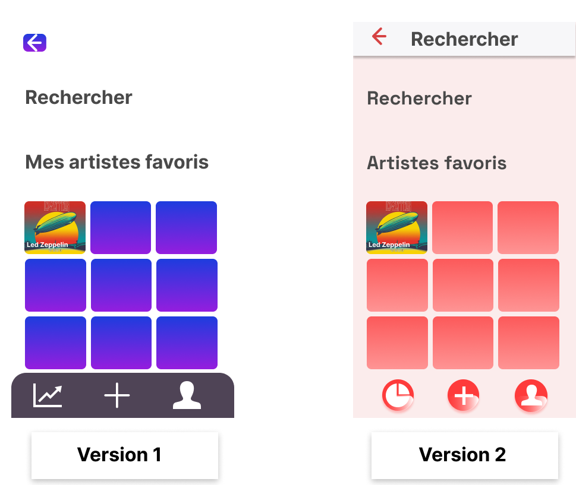
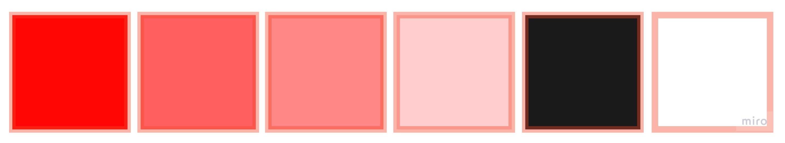

Case-Study
← BackPr◉jet
Keep a Record est un travail de fin d'année issu d’enquêtes menées de manière consciencieuse ainsi que plusieurs recherches qui repose sur le prototype. L’objectif de Keep a Record est de garder facilement une trace de leurs souvenirs dans le monde de l'événementiel près d’eux et de connaître les tournées que feront les artistes.
Un projet digne d'un Travail de Fin d'Année doit forcément être quelque chose qui nous parle, qu'on aimerait partager. Pour ma part j’étais parti sur l’univers de la musique. J’étais inquiète quant au fait qu’il y ait des vols de sacs, de bien personnels lors de l'événementiel. J’ai proposé une vente de produit sécurisés comme des sacs, des sacs à bananes, des bandoulières. Mais ce projet ne démarquait pas tant que ça, le produit existait déjà, je n’avais qu’à faire un site qui les regroupes et de toute manière rien n’est sécurisé à 100%. Je me voyais pas mentir à mes utilisateurs, à mes futurs clients. C'est là que mon premier pivot intervient.
Mon premier pivot s'est donc fait, c'est en parlant à des gens intéressés par le monde du festival/concert que je me suis dis qu'au fond, ce que je voulais retenir dans ce projet c'est avant tout le ressentis des personnes. Il n'existe pas un monde où les personnes intéressés par ce domaine n'ait pas envie de garder leur bons souvenirs quelque part. Mais du coup ma question se pose: comment pourrait-on donner envie aux gens d'écrire leur pensées, illustrer leur moment vécu que ça soit sous forme de phrase ou d’image ? Ne vous en faites pas, j'ai la réponse, suivez-moi.
Pr◉blèmatique
Avant de répondre, ma discussion a fait l'objet d'une enquête sociale avec les personnes qui était concernés de près ou loin par le monde de l'événementiel. J'ai pu définir l'ensemble des personnes comme des gens qui se retiennent de s'exprimer à travers leur divertissement.
En effet, ils avaient beaucoup, mais beaucoup de choses à raconter. La raison pour laquelle ils n'en parlent pas vient du fait qu'ils pensent que leurs experiences ne vaux pas mieux qu'une autre. Plus précisément, ils se disent : «Que vaut mon experience dans un événement aussi unique, comparer aux autres ?» De nos jours, on publie ce qui nous chante, et depuis la popularisation des réseaux sociaux, les personnes montrent qu'elles sont heureuses sans pouvoir montrer le contraire, souvent construit à partir d'un idéal personnel. La réalité derrière tout ça est que l'estime de soi diminuera si l'on vie juste à travers les autres.
Rais◉nnement
Par conséquent, mon application serait dans l'ordre du personnel. Je ne peux pas changer la façon dont pensent les gens, mais par contre, je peux les accompagner dans une démarche qui leur permettrait de s'exprimer librement, à leur sens, sans qu'il n'y ait l'idée de l'idéal. C'est d'après plusieurs études dont une qui a retenu mon attention que j'ai su où me diriger concernant mes trois futures grandes fonctionnalités.
Une étude physchologique explique la théorie de l’autodétermination. Une personne a trois besoins psychologiques fondamentaux : besoin d’autonomie, de compétence et d’appartenance. Lorsqu’ils sont satisfaits, la personne fait les choses avec une motivation interne et ressent un épanouissement et une vitalité. En tenant compte de cela, je conceptualiserait un journal où l'on pourra écrire ce que l'on souhaite dedans. Concernant la compétence, je mettrai en place plus tard un graphique qui résumera leurs faits (lieux, dates, humeurs, artistes,...). Le besoin d'appartenance, la vision globale d'avoir un recueil d'experience personnelles et unique, ne peut que nous procurer un sentiment de plénitude. C'est pour cela que l’écriture est un bon moyen d’identifier et exprimer ses émotions pour leur donner du sens et mieux les comprendre. Il reste la troisième fonctionnalité. Elle sera dédié à la recherche d'artistes. Puisque mon projet concerne la musique, les personnes pourront connaître les informations utiles à la participation d'un événement musicale.
Les utilisateurs pourront ainsi s'exprimer plus librement. Le message que j'aimerai faire passer est : «Exprimez-vous, exprimez ce que vous ressentez, l'authenticité, il n'y a que ça de vrai. ». Cela explique pourquoi, j'ai choisi d'inclure un espace dédié à la prise de notes et d'un graphique dans le cadre de ce projet. Keep à record, c'est dans mes cordes.

C◉ntenu
La veille
Faire de la veille va me permettre de pouvoir démarrer mon application sur des bases solide pour ensuite s'en servir dans la prise de décision. Pour ce qui concerne les notes, le calendrier je me suis documenter sur le site Dribbble.
MVP
MVP (Minimum Viable Product)
On a l'idée du projet, il est temps de tester la viabilité de mon projet via un MVP (Minimum Viable Product) c’est-à-dire à l’aide d’un travail simple et rapide de mon application, qui ne contient presque aucun design.
On aperçoit d'après les tests utilisateurs qu'il fallait analyser le niveau d'ergonomie. Les logo n'étaient pas de la même famille non plus. Le bouton retour ne convenait pas à l'usage des utilisateurs qui devaient appuyer plusieurs fois dessus. La nouvelle version propose un moyen plus simple d'accéder aux différentes navigation et le bouton retour est plus spacieux.
◉bjectifs
Se tenir au courrant des événements musicaux.
L'application doit être simple à utiliser.
Intuitif.
Le l◉g◉
Garder une trace de nos histoires de manière personnelle. L'animation circulaire du logo part de l'idée que l'on enregistre notre passage comme lorsque l'un objet touche l'eau et provoque une ondulation. Le cercle rouge est tout simplement la représentation graphique de l'enregistrement.


N◉m
Le nom doit être accrocheur, facile à prononcer, à retenir et qui doit parfaitement s'identifier au produit.

C◉uleur
La couleur est rouge car elle symbolise bien l'audace et l'energie que porte le projet Keep a Record. Quand on s'interesse a la signification des couleurs et que l'on tombe sur le rouge, on constate que ça apporte beaucoup d'attention, l'oeil l'identifie complètement. Et les sous-tons rouge atténue l'aggressivité que peut porter cette couleur. L'utilisation de la nuance blanche, laisse à l'utilisateur une sensation de légereté de pureté.
Typ◉graphie.
Prôner la clarté et la lisibilité
C’est sur base d’analyse complète que j’ai choisis ma typographie. Il fallait qu’elle soit claire et lisible, que les lettres ne se confondent pas entre-elles:
Il y a accessibility.digital.gov qui est un site intéressant qui regroupe les éléments à considérer pour choisir sa typographie.
Il fonctionne bien quand il est petit ou grand.
Il a une grande hauteur d'x.
Le caractère est grand pour sa taille en points.
Les métriques (telles que la hauteur x) sont cohérentes entre les formes de lettres.
Les formes de lettres individuelles ont une forme distincte et ne peuvent pas être confondues avec d'autres. Par exemple : I, l et 1 sont distincts. 0 et O sont distincts.
La police de caractères prend en charge tous les caractères et styles de police nécessaires.
Test utilisateur
L'étape la plus importante à mes yeux arrive. Car elle signifie avoir des retours de notre travail. Je sens des fois que je me retiens de partager mes projets quand mon petit syndrome de l'imposteur refait surface. On souffle un coup, on connait la chanson: Keep a Record c'est dans nos cordes !
Et ensuite on partage le fruit de notre travail. Comme si une partie de nous même allait être jugée sévèrement, alors que pas du tout. Au contraire ! Le 1er test utilisateurs s'est bien passé dans l'ensemble. Il a rencontrer quelques soucis mais ce dernier était très content d'avoir fait le test. Je me tate de réparer les éléments problématiques de celui-ci et rendre l’expérience utilisateur la plus agréable possible et renforcer l’accessibilité du service que je proposais. L'ensemble des tests se sont bien passé ! Les retours étaient positif, et les utilisateurs parvenaient toujours à compléter la tâche demandée sans trop d’efforts. Malgré tout, quelques points à changer ou à ajouter sont ressortis. Tel que:
Le nom de Timéo pouvait être changer.
Il n'y a plus de bouton retour sur la page "note01".
Le clavir sur la page "note02" doit être cliquable.
Après l'enregistrement de la note, créer une page avec comme visuel la note enregistrer.
Le bilan
L’utilisation d’un workflow, m’a permis de prendre plus de temps sur la partie développement, et d’effectuer des modifications à mon design assez facilement. Enfin, je pense avoir retiré pas mal d’enseignements au niveau de l’expérience utilisateur, en la plaçant au centre de la conception de mon projet. J'ai pris un malin plaisir de la veille pour être à jour sur les nouveautés que ça soit en terme de design et de code.
Vu le travail accompli pour ce TFA, je sais que toutes les notions découvertes ou appronfondies pendant ces dernières semaines me seront utiles pour l'avenir, que ça soit pour gagner du temps ou économiser mon énergie. Je suis contente d'en apprendre tout les jours dans la section Web et Transmedia.